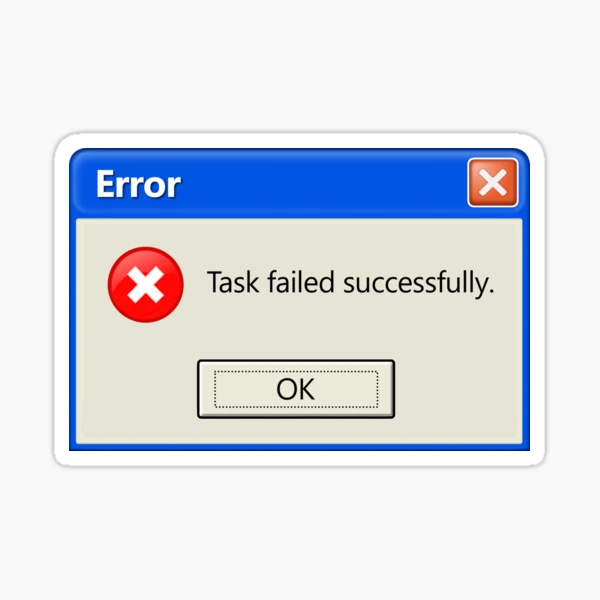

Clase 39:
Gestión Defensiva de Errores & Robust Apps
🎯 Estructura y Prácticas de esta Clase:
- 🦾 Práctica 1: Centralized Incident Manager & Logging Engine
- 💻 Proyecto Final: Error Handling & Robust Apps
💥 Aplicaciones Frágiles vs Aplicaciones Robustas
El manejo defensivo de errores distingue un prototipo inestable de un software profesional de producción:
- Excepción no capturada detiene la ejecución o rompe el hilo.
- Expone trazas de pila (Stacktraces) con rutas de archivos y variables.
- Devuelve error
500 Internal Server Errorconfuso sin ayuda al cliente.
- Captura oportuna de fallos sin interrumpir el servicio.
- Responde con un código HTTP preciso (
400,404,422). - Proporciona un cuerpo JSON claro y estructurado para el Frontend.
⚡ Manejo de Errores en JavaScript: try...catch...finally
try (Intentar):
Bloque donde se coloca el código que podría generar un error en tiempo de ejecución.
catch(error) (Capturar):
Se activa únicamente si ocurre un fallo en el try. Recibe el error y permite gestionarlo sin detener la aplicación.
finally (Siempre):
Bloque de cierre que se ejecuta pase lo que pase (con o sin error). Ideal para tareas de limpieza (cerrar loaders, liberar memoria, etc.).
Si try funciona bien, salta a finally. Si try falla, pasa a catch y termina en finally.
try {
// Código que puede fallar
const resultado = 10 / variableInexistente;
console.log("Esto no se ejecuta si la línea anterior falla");
} catch (error) {
// Qué hacer si ocurre un error
console.error("Ocurrió un error:", error.message);
} finally {
// Siempre se ejecuta
console.log("Operación finalizada (limpieza de recursos)");
}🥛 Analogía Cotidiana: El Vaso de Leche Chocolatada
Imagina que vas a la cocina a prepararte un vaso con leche chocolatada:
try (Intentar):
Tomas el vaso de vidrio con mucho cuidado e intentas servir la leche. Es lo que quieres hacer, pero como el vaso es frágil, existe el riesgo de que se te resbale de las manos.
catch (Atrapar el problema):
Si el vaso se te resbala y se rompe contra el suelo, no te pones a llorar ni te quedas congelado. Entra el plan de rescate: buscas una escoba, avisas qué pasó ("¡se rompió el vaso!") y limpias el desastre para que nadie se corte. Si el vaso nunca se cayó, este paso se ignora por completo.
finally (Pase lo que pase):
Ya sea que te tomaste tu chocolatada feliz de la vida o que el vaso se rompió y tuviste que barrerlo, hay algo que siempre tienes que hacer al terminar: lavarte las manos y apagar la luz de la cocina.
- Con
try, el programa intenta hacer una tarea difícil. - Con
catch, si algo sale mal, el programa atrapa el problema y lo arregla para que la aplicación no se apague de golpe ni se rompa. - Con
finally, el programa siempre guarda sus juguetes y deja todo limpio y ordenado antes de seguir jugando.
📝 Niveles de Log & Seguridad en Auditoría
- NUNCA registrar contraseñas en texto plano.
- NUNCA loguear tokens JWT o API Keys de terceros (.env).
- SIEMPRE sanitizar datos personales (PII) antes de escribir al archivo de log.
🎯 Conceptos Clave que Deben Dominar
Usar el código preciso: 400 Bad Request, 401 Unauthorized, 403 Forbidden, 404 Not Found, 422 Unprocessable Entity.
Estructurar todos los errores con las mismas claves (ej. {"detail": "..."}) para que el Frontend los procese sin romper la interfaz.
Registrar errores técnicos completos en el servidor (con traceback), pero enviar respuestas amigables y limpias hacia el cliente.
Validar los datos a la entrada del endpoint antes de consultar bases de datos o servicios externos. Fallar lo más rápido posible.
💻 ¡Ahora a la Parte Práctica!
Demuestra lo aprendido aplicando los conceptos de esta clase en el proyecto práctico. Abre tu entorno de desarrollo y resolvamos los ejercicios interactivos.
Centralized Incident Manager: Centralized Logging & Audit Engine
🧠 Concepto 1: Audit Trail & Logging Centralizado de Incidentes
Fundamento TeóricoRegistrar automáticamente eventos de fallo y cambios críticos en la aplicación en un archivo log rotativo estructurado en formato JSON.
Evita perder visibilidad sobre errores que ocurren silenciosamente en producción sin saturar los logs de la consola.
Permite correlacionar fallos con transacciones de usuario específicas y realizar auditorías de seguridad en producción.
💻 Ejemplo Práctico: Audit Trail & Logging Centralizado de Incidentes
Analogías & CódigoImagina que tienes una libreta secreta donde anotas cada vez que un juguete se rompe o se cae el jugo a las 3:00, para saber exactamente qué pasó y cuándo arreglarlo.
Es como el diario de a bordo de un barco: el capitán anota cada evento o tormenta para que la tripulación entienda el recorrido sin perder ningún detalle.
logger.error('Incident detected', extra={'incident_id': 'inc_992', 'severity': 'CRITICAL', 'timestamp': '2026-09-07T14:30:00Z'})
🧠 Concepto 2: Nivel de Severidad y Categorización de Eventos
Fundamento TeóricoClasificar incidentes según niveles de gravedad (INFO, WARNING, ERROR, CRITICAL) y código de evento único.
Los sistemas de monitoreo automáticos (Datadog, CloudWatch) dependen de categorías uniformes para disparar alertas inmediatas.
Facilita la filtración y automatización de alertas en tableros de infraestructura sin intervención manual.
💻 Ejemplo Práctico: Nivel de Severidad y Categorización de Eventos
Analogías & CódigoEs como los colores del semáforo: Verde si todo está bien, Amarillo si se cayó una galleta al suelo, Rojo si se rompió una torre de Lego, y Sirena si se fue la luz en toda la casa.
Como la clasificación en un centro médico: una curita para un rasguño simple (INFO/WARN), una venda para una torcedura (ERROR) y ambulancia inmediata para una emergencia médica (CRITICAL).
class IncidentSeverity(str, Enum):
LOW = 'low'
MEDIUM = 'medium'
HIGH = 'high'
CRITICAL = 'critical'
Los sistemas de monitoreo automáticos (Datadog, CloudWatch) dependen de categorías uniformes para disparar alertas inmediatas.
Facilita la filtración y automatización de alertas en tableros de infraestructura sin intervención manual.
🧠 Concepto 3: Persistencia de Incidentes en Archivos Rotativos
Fundamento TeóricoUtilizar manejadores de archivos rotativos (RotatingFileHandler) para guardar logs sin agotar el espacio en disco del servidor.
Configurar límite de tamaño por archivo (ej. 10MB) y número máximo de copias de respaldo (ej. 5 archivos).
Evita caídas catastróficas del servidor por saturación del almacenamiento de disco local.
💻 Ejemplo Práctico: Persistencia de Incidentes en Archivos Rotativos
Analogías & CódigoTienes una caja para guardar tus cuadernos de dibujo. Cuando el cuaderno 1 se llena, abres el 2. Y si se llenan 5 cuadernos, borras las hojas del cuaderno más viejo para tener espacio siempre limpio.
Como una cámara instantánea con memoria fija: la foto número 11 toma el lugar de la foto número 1 de forma automática sin saturar la memoria.
from logging.handlers import RotatingFileHandler
handler = RotatingFileHandler('incidents.log', maxBytes=10*1024*1024, backupCount=5)
🧠 Concepto 4: Enmascaramiento de Datos Sensibles (PII Redaction)
Fundamento TeóricoSanear los datos de incidentes antes de ser guardados en log, censurando tokens de autenticación, contraseñas y PII.
Exponer PII (Personally Identifiable Information) en los logs viola normativas internacionales como GDPR, PCI-DSS y HIPAA.
💡 ¿Por Qué Importa?
Protege la privacidad de los usuarios y previene fugas de seguridad en el almacenamiento de logs.
💻 Ejemplo Práctico: Enmascaramiento de Datos Sensibles (PII Redaction)
Analogías & CódigoJuegas a ser un agente secreto. Cuando escribes una carta, le pones cinta negra encima a tu contraseña para que si un villano la encuentra, solo vea rectángulos negros.
Como usar una máscara en una fiesta de disfraces: todos pueden ver tu disfraz y tus movimientos, pero tu identidad y cara real permanecen protegidas.
def sanitize_payload(data: dict) -> dict:
data['password'] = '***REDACTED***'
data['token'] = '***REDACTED***'
return data
📡 Diagrama Conceptual / Flujo de Datos
+------------------+ +-----------------------+ +--------------------------+
| Client Request | ------> | Incident Router | ------> | Redaction Filter |
+------------------+ +-----------------------+ | (Redact Passwords/PII) |
+--------------------------+
|
+------------------+ +-----------------------+ v
| Audit Trail JSON | <------ | RotatingFileHandler | <---------------------+
| (incidents.log) | | (JSON Log Formatter) |
+------------------+ +-----------------------+
📂 Estructura de Archivos Sugerida
app/ ├── core/ │ ├── logger.py # RotatingFileHandler & JSON Formatter │ └── security.py # PII Redaction Filter ├── schemas/ │ └── incident.py # Schema Incident (severity, code, payload) ├── routers/ │ └── incidents.py # Endpoints de reporte e inspección └── main.py # Registro de logger audit
⚠️ Puntos Trampa (Gotchas) & Criterios Ready for Production
print() simple en lugar del módulo estándar logging.RotatingFileHandler con tamaño máximo y retención de archivos.INFO, WARNING, ERROR, CRITICAL).💻 ¡Ahora a la Parte Práctica!
Demuestra lo aprendido aplicando los conceptos de esta clase en el proyecto práctico. Abre tu entorno de desarrollo y resolvamos los ejercicios interactivos.
Building Bulletproof Applications: Defensive Error Handling & Custom Exceptions
🧠 Concepto 1: Jerarquía de Excepciones Personalizadas
Fundamento TeóricoDefinir excepciones derivadas de una clase base propia (ej. AppBaseException) para separar errores de dominio de errores de infraestructura.
Permite a la aplicación lanzar fallos expresivos de negocio (ej. UserNotFoundError) sin acoplar la lógica de dominio al framework web HTTP.
Permite clasificar y tratar fallos de negocio de forma extensible sin duplicar condicionales en los controladores.
💻 Ejemplo Práctico: Jerarquía de Excepciones Personalizadas
Analogías & CódigoTienes una caja grande llamada 'Problemas', y adentro cajitas etiquetadas: 'Sin galletas', 'Sin osito' y 'Crayón roto'. Así sabes a quién pedirle ayuda rápida.
Como un tablero con botones de emergencia específicos: un botón para pedir agua al plomero y otro botón diferente para llamar al electricista.
class AppBaseException(Exception):
def __init__(self, message: str, code: str, status_code: int = 400):
self.message = message
self.code = code
self.status_code = status_code
🧠 Concepto 2: Manejadores Globales en FastAPI (@app.exception_handler)
Fundamento TeóricoInterceptar excepciones lanzadas en cualquier punto de la aplicación y transformarlas centralizadamente en respuestas HTTP estructuradas.
Elimina la necesidad de envolver cada endpoint en bloques try-except manuales, delegando la transformación de errores al framework.
Mantiene los endpoints limpios y concentrados exclusivamente en la lógica de negocio principal.
💻 Ejemplo Práctico: Manejadores Globales en FastAPI (@app.exception_handler)
Analogías & CódigoEs como tener a tu mamá cuidando el parque de juegos: no importa en qué resbaladilla te caigas, ella siempre sale corriendo a curarte con la misma curita suavecita.
Como una central única de atención 911: recibe todas las llamadas de auxilio de la ciudad y emite la respuesta estandarizada correcta de inmediato.
@app.exception_handler(AppBaseException)
def custom_exception_handler(request: Request, exc: AppBaseException):
return JSONResponse(status_code=exc.status_code, content={'error': True, 'code': exc.code, 'message': exc.message})
Elimina la necesidad de envolver cada endpoint en bloques try-except manuales, delegando la transformación de errores al framework.
Mantiene los endpoints limpios y concentrados exclusivamente en la lógica de negocio principal.
🧠 Concepto 3: Esquema Unificado de Respuesta de Error (JSON Envelope)
Fundamento TeóricoGarantizar que todas las respuestas de error (4xx y 5xx) mantengan exactamente la misma estructura JSON con código de error, mensaje y timestamp.
El cliente frontend o cliente HTTP puede consumir cualquier respuesta de error utilizando un único contrato estandarizado de parseo.
Facilita la integración limpia con el frontend y evita respuestas desestructuradas o inesperadas.
💻 Ejemplo Práctico: Esquema Unificado de Respuesta de Error (JSON Envelope)
Analogías & CódigoTodas las loncheras de la escuela tienen la misma forma: un compartimento para el jugo, uno para el sándwich y la etiqueta. La maestra abre cualquier lonchera sin confundirse.
Como los pasaportes internacionales: todos tienen la foto a la izquierda y los datos al centro, permitiendo a cualquier autoridad leer la información con la misma plantilla.
{
"error": true,
"code": "RESOURCE_NOT_FOUND",
"message": "El recurso solicitado no fue encontrado.",
"timestamp": "2026-09-07T14:30:00Z"
}
🧠 Concepto 4: Degradación Grácil (Graceful Degradation)
Fundamento TeóricoCapturar fallos inesperados y ofrecer fallbacks seguros o respuestas 500 controladas sin comprometer la disponibilidad del sistema.
Si un servicio secundario (ej. caché o recomendador) falla, la API retorna una respuesta parcial segura en lugar de colapsar la petición entera.
💡 ¿Por Qué Importa?
Mantiene la alta disponibilidad y la experiencia de usuario aun en situaciones de fallo parcial.
💻 Ejemplo Práctico: Degradación Grácil (Graceful Degradation)
Analogías & CódigoSi estás armando un castillo con bloques azules y se te acaban, no tiras todo al suelo ni te pones a llorar; usas un bloque amarillo y tu castillo sigue siendo genial.
Como las luces de emergencia en un hospital: si falla la energía principal, el generador auxiliar enciende luces básicas para mantener todo funcionando de forma segura.
try:
user_recommendations = recommendation_service.get(user_id)
except ServiceUnavailableError:
user_recommendations = get_fallback_default_recommendations()
📡 Diagrama Conceptual / Flujo de Datos
+------------------+ +-----------------------+ +--------------------------+
| Client Request | ------> | FastAPI Router | ------> | Exception Raised |
+------------------+ +-----------------------+ | (ej: UserNotFoundError) |
+--------------------------+
|
+------------------+ +-----------------------+ v
| Clean JSON Error | <------ | Centralized Handler | <---------------------+
| (404/400 Status) | | + Audit Logger |
+------------------+ +-----------------------+
📂 Estructura de Archivos Sugerida
app/ ├── core/ │ ├── exceptions.py # Excepciones personalizadas │ ├── handlers.py # Global exception handlers │ └── logger.py # Configuración de logging audit ├── schemas/ │ └── error.py # Schema ErrorResponse JSON ├── routers/ │ └── items.py # Endpoints limpios sin try/except └── main.py # Registro de handlers
⚠️ Puntos Trampa (Gotchas) & Criterios Ready for Production
except: pass vacíos que ocultan fallos críticos sin dejar rastro en logs.200 OK con un payload {"status": "error"} confundiendo al cliente HTTP.AppBaseException.ERROR, CRITICAL) y ruta solicitada.🎭 Cuando el Error Handler Funciona en Producción
